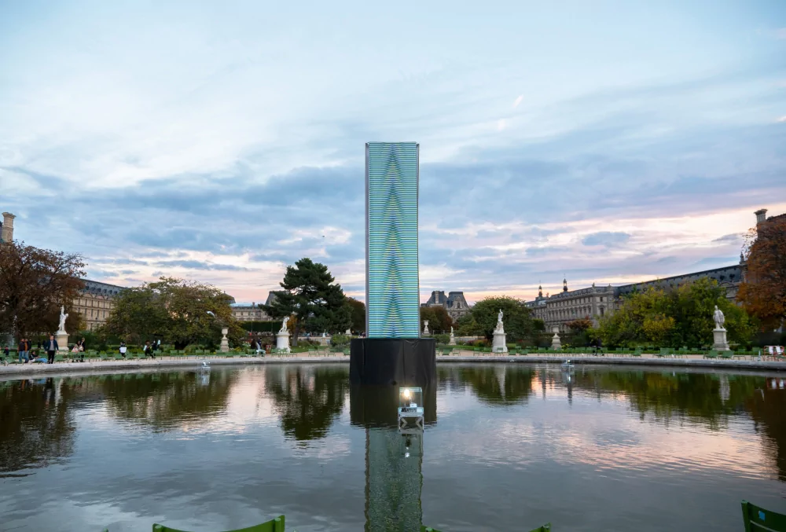

Los Ángeles
Interversion del artista en las principales calles comerciales de la ciudad.
Londres
Estructura circular en la plaza mayor de Londres, exhibida durando los juegos olimpicos del 2014.
Panamá
Edificio ubicado en la costanera de panama, una de las primeras obras de Cruz-Diez en esta ciudad
Caracas
Intervencion del artista en el Aeropuerto Simon Bolivar, uno de los íconos de la migracion venezolana.

Páris
Mosaicos en el techo de una estacion de tren, creada en el 2015 en calidad de donación a la ciudad.

Dubái
Monumento en el parque Al Qasar, fue uno de los primeras obras del artista en Dubai